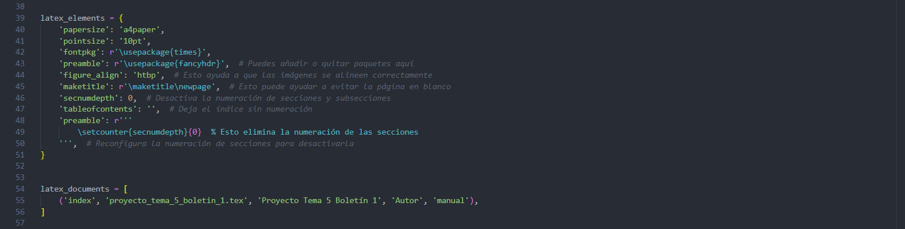

1.9. Generación de PDF a partir de la documentación:
Para la generación de archivos PDF, en nuestro caso hemos escogido el sistema que emplea la tipografía LaTeX, mediante la cual gracias a un intérprete vamos a poder generar archivos en formato .tex, que posteriormente se compilarán en documentos PDF con una apareriencia profesional. Para ello, el primer paso será tener una distribución de TeX propiamente instalada dentro del equipo donde se quiera realizar esta tarea. Es por eso que en nuestro caso hemos decidido instalar MiKTeX. El proceso de instalación será el siguiente:
1. Buscamos MiKTeX en nuestro navegador e indicamos en que parte del sistema deseamos instalarlo
2. Al instalarlo, abriremos posteriormente su consola para actualizarlo y agregaremos los paquetes de latexpdf necesarios para generar nuestros documentos
3. Finalmente, indicaremos al Sistema Operativo mediante la modificación de la Variable del Sistema Path la ruta de instalación de MiKTeX, con la finalidad de que se reconozca posteriormente el comando que tenemos que emplear
Tras realizar todos estos pasos, es momento de dirigirnos a nuestro proyecto y comenzar a generar la documentación. Para eso ejecutaremos el siguiente comando:
.\make.bat clean; .\make.bat latexpdf
Comando |
Explicación |
|---|---|
.\make.bat clean |
Ejecuta el script |
.\make.bat latexpdf |
Ejecuta el script |
Al ejecutar el comando, la carpeta build se nos reestructurará y se nos generará el archivo .pdf correspondiente dentro del subdirectorio /latex.
IMPORTANTE
Para que el formato PDF salga con el formato deseado y con el fin de evitar errores, como duplicación de páginas en blanco o de índices en la numeración, se ha tenido que agregar la siguiente configuración dentro del archivo conf.py:
